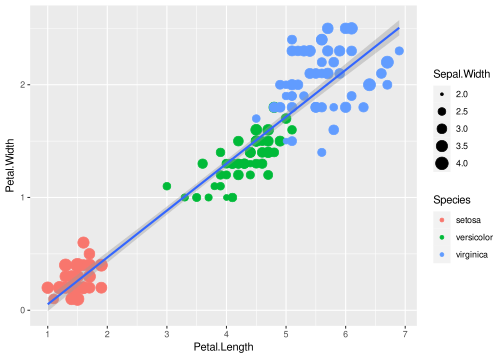
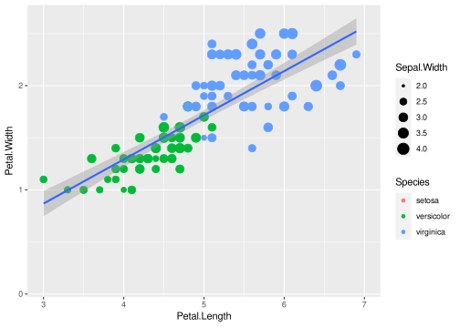
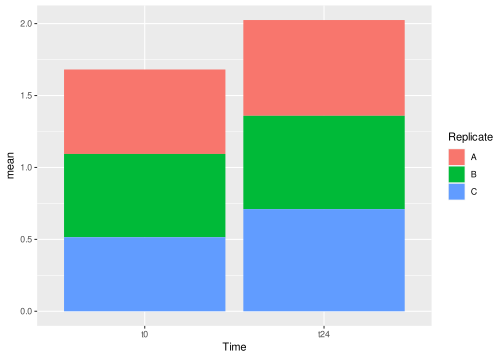
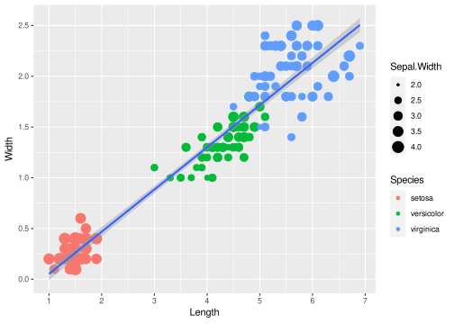
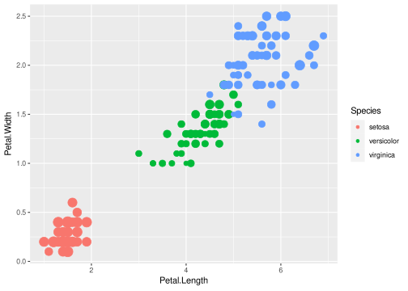
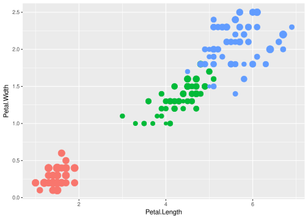
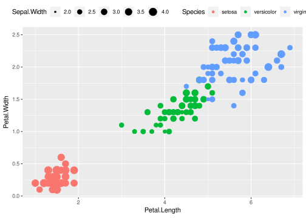
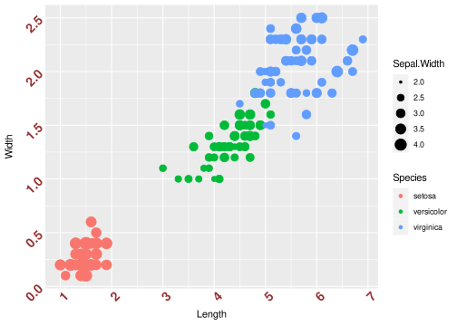
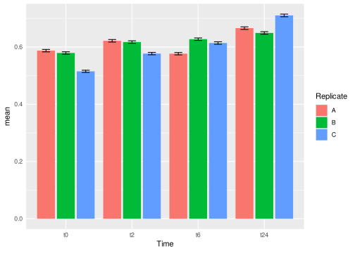
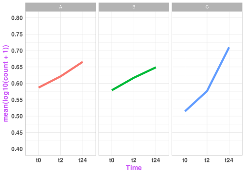

ggplot basics 3
Workshop on ggplot
Lokesh Mano • 03-Nov-2020
Now that we have covered the important aspects of ggplot, meaning getting the actual plot you wanted, let us now look into secondary elements of the plot.
1 Modifying Axes
1.1 Breaks
If we look at the iris data plot that we made before:
The continuous x axis breaks are with 2,4,6 and so on. If we would like to have 1,2,3… We change this using scale_x_continuous() and breaks.
ggplot(data=iris,mapping=aes(x=Petal.Length,y=Petal.Width))+
geom_point(aes(size=Sepal.Width, color=Species))+
geom_smooth(method="lm") +
scale_x_continuous(breaks = 1:7)plot

You can do the same with y-axis.
1.2 Limits
By using limits, we can also decide on the parts to plot to be shown:
ggplot(data=iris,mapping=aes(x=Petal.Length,y=Petal.Width))+
geom_point(aes(size=Sepal.Width, color=Species)) +
geom_smooth(method="lm") +
scale_x_continuous(limits=c(3, 7))plot

We can do the same with discrete x values like in the case of our gene counts dataset.
gc_long %>%
group_by(Time, Replicate) %>%
summarise(mean=mean(log10(count +1)),se=se(log10(count +1))) %>%
ggplot(aes(x=Time, y=mean, fill = Replicate)) +
geom_bar(stat = "identity") +
scale_x_discrete(limits=c("t0","t24"))plot

One can also use xlim() and ylim() functions that function the same as limits with scale_x_continous() or scale_x_discrete()
1.3 Names
You can also customize the axis labels using the name option within scale_x_continous and scale_y_continous.
ggplot(data=iris,mapping=aes(x=Petal.Length,y=Petal.Width))+
geom_point(aes(size=Sepal.Width, color=Species))+
geom_smooth(method="lm") +
scale_x_continuous(name = "Length", breaks = 1:7) +
scale_y_continuous(name = "Width", breaks = seq(0,3,0.5))plot

with labels in combination with the scales package, one can change or make the unit of the axis look more comprehensible, when needed. Like using percentage option or scientific option.
2 Legends
There are many ways to control the legends, below are some of the examples:
First by using guides() function.
ggplot(data=iris,mapping=aes(x=Petal.Length,y=Petal.Width))+
geom_point(aes(color=Species,size=Sepal.Width))+
guides(size="none")plot

We can also turn off legends by geom.
ggplot(data=iris,mapping=aes(x=Petal.Length,y=Petal.Width))+
geom_point(aes(color=Species,size=Sepal.Width),show.legend=FALSE)plot

2.1 Editing legends
The legends can be edited by scale_<aesthetic>_<discrete or continous> function that we have been using. Take the below figure for example, we have the Sepal.Width and the Species with the size and color aestheitcs respectively.
Let’s try to edit the legends here like mentioned before:
2.2 Moving legends
Legends can be moved around using theme.
ggplot(data=iris,mapping=aes(x=Petal.Length,y=Petal.Width))+
geom_point(aes(color=Species,size=Sepal.Width)) +
theme(legend.position="top",
legend.justification="right")plot

Legend rows can be controlled in a finer manner.
3 Themes
Now that we started into theme(), it is possible to much more editing of the plot with this function. Let us look into some of the parameters that would be very helpful to work with.
3.1 Axis style
You can change the style of the axis texts in the following way:
ggplot(data=iris,mapping=aes(x=Petal.Length,y=Petal.Width)) +
geom_point(aes(color=Species,size=Sepal.Width)) +
scale_x_continuous(name = "Length", breaks = 1:7) +
scale_y_continuous(name = "Width", breaks = seq(0,3,0.5)) +
theme(axis.text.x = element_text(face="bold", color="#993333", size=14, angle=45),
axis.text.y = element_text(face="bold", color="#993333", size=14, angle=45))plot
It is also possible hide the ticks.
ggplot(data=iris,mapping=aes(x=Petal.Length,y=Petal.Width)) +
geom_point(aes(color=Species,size=Sepal.Width)) +
scale_x_continuous(name = "Length", breaks = 1:7) +
scale_y_continuous(name = "Width", breaks = seq(0,3,0.5)) +
theme(axis.text.x = element_text(face="bold", color="#993333", size=14, angle=45),
axis.text.y = element_text(face="bold", color="#993333", size=14, angle=45),
axis.ticks = element_blank())plot

There are many things one can use to style the axis and/or axis labels. Just use ?theme() to look for all the different one can use to stylize the plots.
3.2 Different themes
Let’s consider the plot below and save it as an object P for the sake of simplicity.
P <- gc_long %>%
group_by(Time, Replicate) %>%
summarise(mean=mean(log10(count +1)),se=se(log10(count +1))) %>%
ggplot(aes(x= Time, y= mean, fill = Replicate)) +
geom_bar(position = position_dodge2(), stat = "identity") +
geom_errorbar(aes(ymin=mean-se, ymax=mean+se), position = position_dodge2(.9, padding = .6)) +
theme(axis.ticks = element_blank())
Pplot

3.2.1 Lighter themes
theme_light(), theme_minimal(), theme_classic() and theme_bw() are a couple of themes that are used very often in publications.
3.2.2 ggthemes package
Let’s look into some of the fancier themes that comes in this package
Q <- ggplot(data = gc_long, mapping = aes(x = Sample_Name, y = log10(count + 1), fill = Time))
Q + geom_boxplot() plot

Using the theme_tufte()

4 Exercise
Task Try to replicate the plot below if you have enough time.
plot

Tip: 1 geom_line() is a bit tricky when you use it together with groups. It tries to draw lines within the group. In this case, if you would like to draw lines between the groups (like in the above plot, between t0 through t2 to t24), you initate the ggplot with aesthetics for the line and add geom_line(aes(group=1)) this way.
Tip: 2 This figure has theme_light()
5 Session info
## R version 3.6.3 (2020-02-29)
## Platform: x86_64-pc-linux-gnu (64-bit)
## Running under: Ubuntu 20.04.1 LTS
##
## Matrix products: default
## BLAS: /usr/lib/x86_64-linux-gnu/blas/libblas.so.3.9.0
## LAPACK: /usr/lib/x86_64-linux-gnu/lapack/liblapack.so.3.9.0
##
## locale:
## [1] LC_CTYPE=en_US.UTF-8 LC_NUMERIC=C
## [3] LC_TIME=en_US.UTF-8 LC_COLLATE=en_US.UTF-8
## [5] LC_MONETARY=en_US.UTF-8 LC_MESSAGES=en_US.UTF-8
## [7] LC_PAPER=en_US.UTF-8 LC_NAME=C
## [9] LC_ADDRESS=C LC_TELEPHONE=C
## [11] LC_MEASUREMENT=en_US.UTF-8 LC_IDENTIFICATION=C
##
## attached base packages:
## [1] stats graphics grDevices utils datasets methods base
##
## other attached packages:
## [1] ggthemes_4.2.0 scales_1.1.1 forcats_0.5.0 stringr_1.4.0
## [5] purrr_0.3.4 readr_1.3.1 tidyr_1.1.2 tibble_3.0.4
## [9] tidyverse_1.3.0 reshape2_1.4.4 ggplot2_3.3.2 dplyr_1.0.2
## [13] captioner_2.2.3 bookdown_0.20 knitr_1.29
##
## loaded via a namespace (and not attached):
## [1] tidyselect_1.1.0 xfun_0.18 lattice_0.20-40 splines_3.6.3
## [5] haven_2.3.1 colorspace_1.4-1 vctrs_0.3.4 generics_0.0.2
## [9] htmltools_0.5.0 mgcv_1.8-31 yaml_2.2.1 blob_1.2.1
## [13] rlang_0.4.8 pillar_1.4.6 glue_1.4.2 withr_2.3.0
## [17] DBI_1.1.0 dbplyr_1.4.4 modelr_0.1.8 readxl_1.3.1
## [21] lifecycle_0.2.0 plyr_1.8.6 munsell_0.5.0 gtable_0.3.0
## [25] cellranger_1.1.0 rvest_0.3.6 evaluate_0.14 labeling_0.4.2
## [29] fansi_0.4.1 broom_0.7.0 Rcpp_1.0.5 backports_1.1.10
## [33] jsonlite_1.7.1 farver_2.0.3 fs_1.5.0 hms_0.5.3
## [37] digest_0.6.27 stringi_1.5.3 grid_3.6.3 cli_2.1.0
## [41] tools_3.6.3 magrittr_1.5 crayon_1.3.4 pkgconfig_2.0.3
## [45] Matrix_1.2-18 ellipsis_0.3.1 xml2_1.3.2 reprex_0.3.0
## [49] lubridate_1.7.9 assertthat_0.2.1 rmarkdown_2.3 httr_1.4.2
## [53] rstudioapi_0.11 R6_2.5.0 nlme_3.1-144 compiler_3.6.3End of document